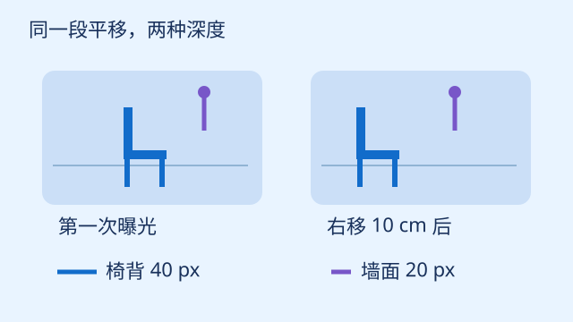

围着同一个物体拍一圈，沿着采集、表面表示和新视角渲染一路读下去。
亲自挑出两张有视差的照片，再确定哪些角度还缺观测。

用一把椅子练习拍摄，理解照片重叠、视差、曝光时刻与相机位姿怎样共同影响重建。
比较网格怎样连接表面，以及高斯怎样把多层颜色混进一个像素。
从四个角点拼出一块平板，弄清顶点、三角面、法向以及真实开口和采样空洞的区别。
一组三维色斑如何从不同角度画出同一间屋子？从一个像素的颜色混合开始，理解 3D Gaussian Splatting。
离开原来的拍摄位置，用视差和遮挡查明漂浮伪影。
换一个观察位置，利用视差、遮挡和深度判断一块悬浮颜色的来源。
常用关键词